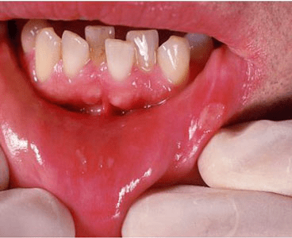

Canker sores (aphthous ulcers), or aphthae, are the most common cause of
periodic (recurring) ulcers inside the mouth and genital linings (mucous membrane surfaces).
Their cause is unknown, but stress, lack of sleep, trauma, and perhaps some
vitamin deficiencies, toothpastes, and foods can make the condition worse.
Some people with anemia and other medical conditions that weaken the immune
system may be more likely to develop canker sores.
There are 3 types of canker sore:
